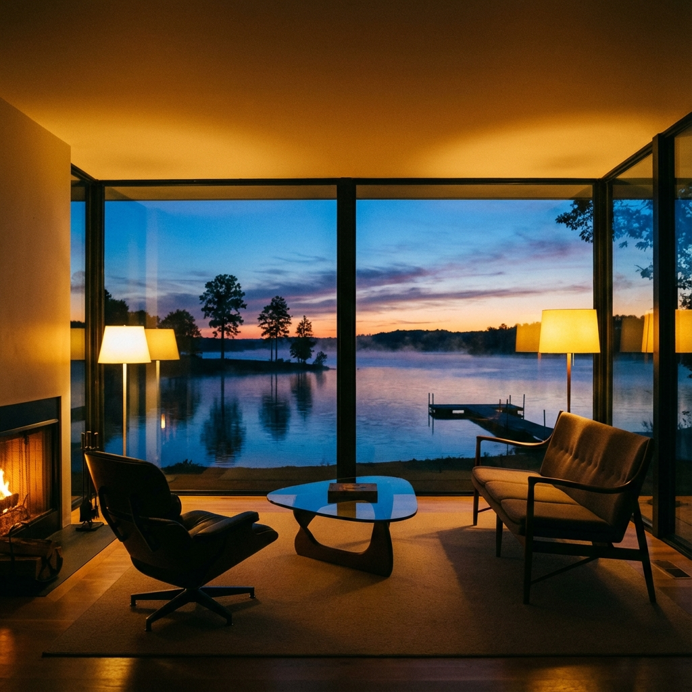
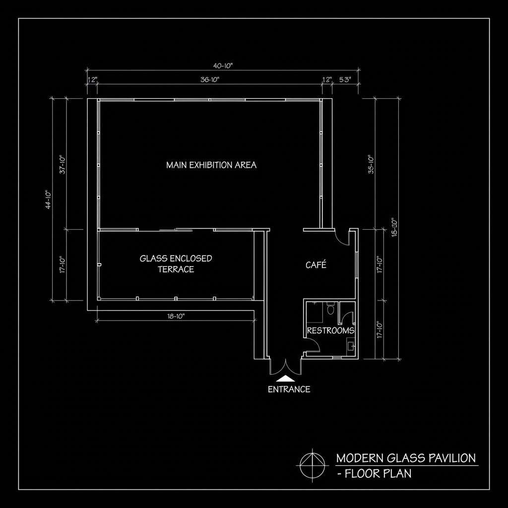

Year
2023
Client
Municipal Arts Council
Area
120 m²
Status
Completed
Concept
Designed as a space for public contemplation, the Glass Pavilion sits lightly on the edge of Lake Siljan. The structure is an exercise in dematerialization—minimizing the visual weight of the roof and columns to prioritize the reflection of the water and the sky.
The boundary between interior and exterior dissolves completely, creating an immersive experience where the architecture acts merely as a frame for the surrounding nature.

View towards Lake Siljan

Floor Plan